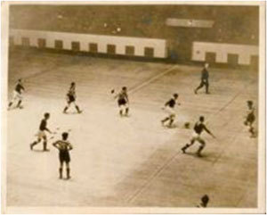

El fútbol sala, fútbol de salón, futsal, futsala o microfútbol Cada equipo de fútbol sala debe estar compuesto por 5 jugadores en los que debe haber un portero en cada equipo, el juego consiste en introducir el balón en un arco protegido por el portero del equipo contrario quien tratará de evitar que el balón entre en la portería. Surgió inspirado en otros deportes como el fútbol, que es la base del juego; el balonmano; el waterpolo; y el baloncesto; tomando de estos no solo parte de las reglas, sino también algunas tácticas de juego.
Aunque inicialmente estuvo regido por la Federación Internacional de Fútbol de Salón (Fifusa), hoy existen dos entes mundiales: la sucesora directa de la anterior, llamada Asociación Mundial de Futsal (AMF), y la FIFA.
A diferencia del fútbol profesional y al igual que en el fútbol playa, aquí no existe el fuera de juego (off-side).
Se vivió una auténtica locura, los jóvenes se sentían eufóricos por practicar el fútbol sin tener en cuenta el tamaño o el tipo de superficie. Eran pocas las canchas para practicarlo y permanecían llenas, obligando a niños y jóvenes a jugar en las calles y en terrenos más pequeños. Fue el profesor Juan Carlos Ceriani, de la Asociación Cristiana de Jóvenes (YMCA) de Montevideo, quien llevó su práctica a escenarios cerrados. Se le ocurrió adaptar las normas del fútbol, combinándolas con reglas de otros deportes como el balonmano, waterpolo y el baloncesto, a un campo pequeño y duro. Del baloncesto tomó el número de jugadores, cinco por cada equipo, y el tiempo total de juego de 40 minutos; del balonmano el tamaño de las porterías, el balón de escaso rebote y las medidas del campo; y del waterpolo las reglas referentes al arquero.Inicialmente se le llamó «fútbol de salón» y causó sensación en Uruguay, pasando posteriormente al resto de Sudamérica extendiéndose por todos los continentes.
Las reglas principales del fútbol sala son las siguientes:
Hay distintas formaciones en fútsal: 1-4 con un defensa, dos extremos y un delantero / 2-3 también llamada cuadrado en la que hay dos defensas y dos delanteros / 5-0 con jugadores universales, la mayoría de las veces con extremos y defensas.